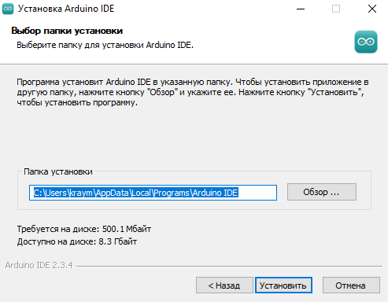
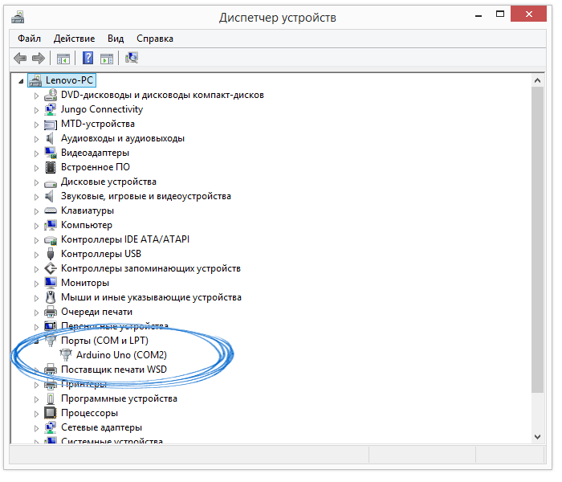
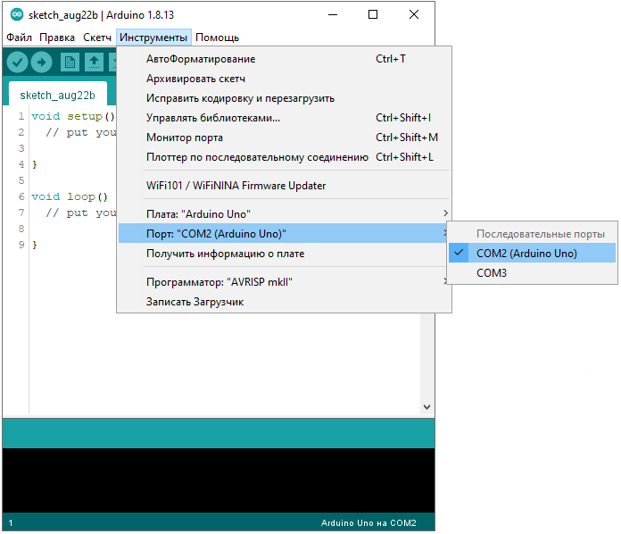
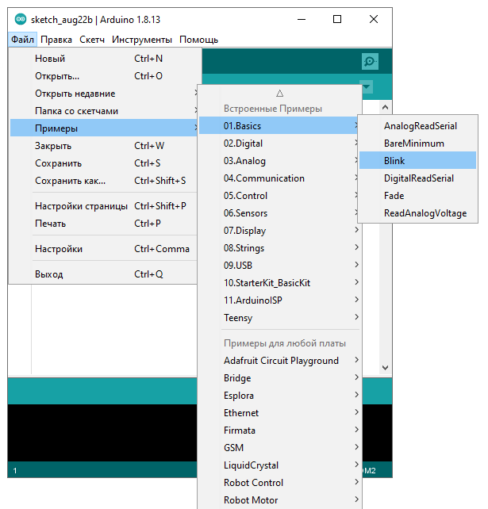
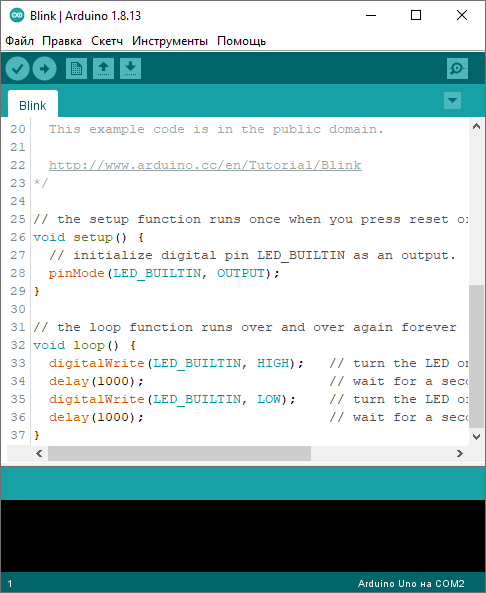
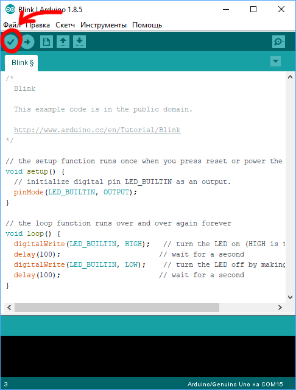

Arduino IDE: установка и настройка
1. Установка Arduino IDE под Windows
Установите на компьютер интегрированную среду разработки Arduino IDE.
скачатьПосле загрузки программы - запустите и установите её в удобную для вас папку.
2. Запуск Arduino IDE
Запустите среду программирования.

3. Подключение платы Arduino к компьютеру
1. Соедините Arduino с компьютером по USB-кабелю. На плате загорится светодиод «ON» и начнёт мигать светодиод «L». Это значит, что на плату подано питание и микроконтроллер начал выполнять прошитую на заводе программу «Blink».
2. Для настройки Arduino IDE под конкретную модель узнайте, какой номер COM-порта присвоил компьютер вашей плате. Зайдите в «Диспетчер устройств» Windows и раскройте вкладку «Порты (COM и LPT)».
Операционная система распознала плату Arduino как COM-порт и назначила номер 2. Если вы подключите к компьютеру другую плату, операционная система назначит ей другой номер. Если у вас несколько платформ, очень важно не запутаться в номерах COM-портов.
4. Настройка Arduino IDE
Для работы среды Arduino IDE с конкретной платформой необходимо выбрать название модели и номер присвоенного плате COM-порта.
1. Для выбора модели Arduino зайдите в меню: Инструменты - Плата и укажите соответствующую плату.

2. Для выбора номера COM-порта перейдите в меню: Инструменты - Порт и укажите нужный порт.
5. Загрузка первого скетча
Среда настроена, плата подключена. Пора прошивать платформу.
Arduino IDE содержит большой список готовых примеров, в которых можно быстро подсмотреть решение какой-либо задачи.
1. Откройте распространенный пример — «Blink»: Файл - Примеры - 01.Basics - Blink.
2. Откроется окно с демонстрационным примером.
3. Немного модифицируйте код, чтобы увидеть разницу с заводским миганием светодиода. Замените строчки:
─ delay(1000);
на:
─ delay(100);
4. Нажмите на иконку «Компиляция» для проверки кода на ошибки
5. Нажмите на иконку «Загрузка» для заливки на плату.

6. После прошивки платформы светодиод «L» начнёт загораться и гаснуть каждые 100 миллисекунд — в 10 раз быстрее исходной версии. Это значит, что ваш тестовый код успешно загрузился и заработал.